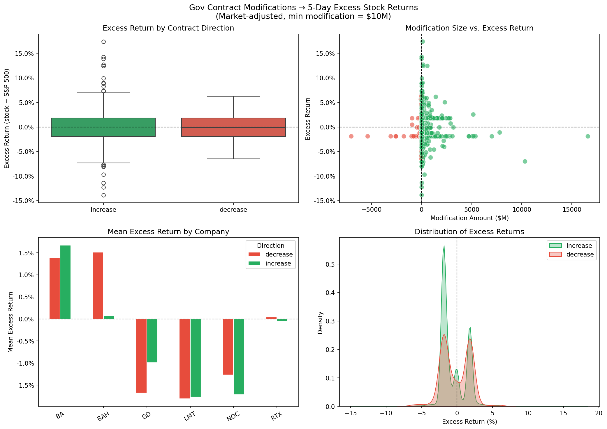

An event study testing whether large supplemental contract modifications produce abnormal stock returns across 6 major defense contractors.
The hypothesis is not supported. Contract increases do not produce positive excess returns — if anything, the opposite is true. Contract decreases show no statistically significant effect.
Mean market-adjusted return after a contract increase. Significant and negative — opposite of the hypothesis.
✓ Significant · p < 0.0001Near-zero effect. Decreases do not reliably move stock prices in either direction.
✗ Not significant · p = 0.186Interpretation: Major contract awards are likely already priced in before the official modification date, or anticipated by institutional investors who track government procurement calendars.

Gov Contract Modifications → 5-Day Excess Stock Returns (market-adjusted, min modification = $10M)
| Company | Increases (n) | Decreases (n) | Inc. Return | Dec. Return |
|---|---|---|---|---|
| BA — Boeing | 1,230 | 106 | +1.67% | +1.39% |
| BAH — Booz Allen Hamilton | 251 | 4 | +0.07% | +1.51% |
| GD — General Dynamics | 346 | 11 | −0.99% | −1.68% |
| LMT — Lockheed Martin | 1,635 | 83 | −1.77% | −1.81% |
| NOC — Northrop Grumman | 943 | 22 | −1.72% | −1.27% |
| RTX — Raytheon | 551 | 29 | −0.05% | +0.04% |
Note: BA and BAH are the only companies with positive excess returns on increases. LMT and NOC — with the most events — show the most consistent negative excess returns. BAH's decrease sample (n=4) is too small to be reliable.